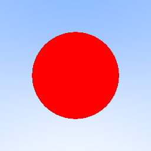
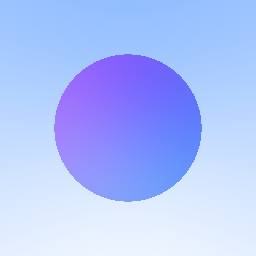

in the previous blog, we've setup a simple virtual camera and have rendered a blue-white gradient. in this blog, we'd render a simple sphere and learn about antialiasing.
we've to first figure out whether a certain ray hits a sphere or not.
the equation for a sphere of radius r and centered at origin
can be mathematically represented as follows:
x^2 + y^2 + z^2 = r^2
and position of any arbitary point (a, b, c) with respect to the sphere can be judged by comparing the value of a^2 + b^2 + c^2 with r^2
the equation for a sphere of radius r and centered at a point
(Cx, Cy, Cz) is as follows
(Cx - x)^2 + (Cy - y)^2 + (Cz - z)^2 = r^2the above equation can be also represented in the form of vectors as follows
(C - P)⋅(C - P) = r^2; where C = (Cx, Cy, Cz) and P = (x, y, z)
so to check if a ray hits the sphere, we've to find the value of
t which satisfies the following equation
(C - P(t))⋅(C - P(t)) = r^2; where P(t) = Q + td, Q is origin of the ray and d is the direction of the ray
after doing some math magic, you realize that it is a quadratic equation
in t
(d⋅d)t^2 - (2d⋅(C - Q))t + (C - Q)⋅(C - Q) - r^2 = 0
and from algebra, a quadratic equation has real solutions only if its discriminant is greater than or equal to 0
D = b^2 - 4ac
D = (2d⋅(C - Q))^2 - 4(d⋅d)((C - Q)⋅(C - Q) - r^2)
to render a red sphere, we've to write some logic within
RayColor function which would return red color if the
discriminant is greater than or equal to 0 else it would return the color
related to the background. so let's implement it in code.
func (r Ray) HitSphere(center Vector, radius float64) bool {
cq := center.SubtractVector(r.Origin)
a := r.Direction.DotProduct(r.Direction)
b := 2 * r.Direction.DotProduct(cq)
c := cq.DotProduct(cq) - radius*radius
d := b*b - 4*a*c
return d >= 0
}
func RayColor(r Ray) Vector {
if r.HitSphere(NewVector(0, 0, -1), 0.5) {
return NewVector(1, 0, 0)
}
unitVec := r.Direction.UnitVector()
t := 0.5 * (unitVec.Y + 1)
color := NewVector(1, 1, 1).MultiplyScalar(1.0 - t).AddVector(NewVector(0.5, 0.7, 1.0).MultiplyScalar(t))
return color
}on running the script, you must see a red sphere in center of the image

and this is your first raytraced image. congo!
normals are very much crucial for shading in ray tracing because they represent the surface orientation at each point, determining how light interacts with the object and also calculate the brightness of a surface
let's make a simple algorithm which shades the sphere based on the surface normals. the first part of shading a sphere based on surface normal is to calculate direction of the surface normal. calculating direction of a normal is pretty much straightforward.
N = P - C; where P is the point of intersection of the ray with the sphere
N always points in the direction outside of the sphere
func (r Ray) HitSphere(center Vector, radius float64) (bool, float64) {
cq := center.SubtractVector(r.Origin)
a := r.Direction.DotProduct(r.Direction)
b := 2 * r.Direction.DotProduct(cq)
c := cq.DotProduct(cq) - radius*radius
d := b*b - 4*a*c
if d >= 0 {
p := (-b - math.Sqrt(d)) / (2 * a)
return true, p
}
return false, 0
}
func RayColor(r Ray) Vector {
center := NewVector(0, 0, -1)
radius := 0.5
found, p := r.HitSphere(center, radius)
if found {
normal := r.At(p).SubtractVector(center).UnitVector()
return NewVector(normal.X+1, normal.Y+1, normal.Z+1).MultiplyScalar(0.5)
}
unitVec := r.Direction.UnitVector()
t := 0.5 * (unitVec.Y + 1)
color := NewVector(1, 1, 1).MultiplyScalar(1.0 - t).AddVector(NewVector(0.5, 0.7, 1.0).MultiplyScalar(t))
return color
}
i've updated the RayColor function a bit to also return the
hit point's coordinates, which is later used by Ray.At method
to calculate the direction of surface normal
the shading process is pretty much simple. an unit vector is found along the direction of the normal and each component of the unit vector is mapped to a range of 0.0 to 1.0.
on running the script, the rendered image must be similar to

in computer graphics, aliasing is the effect that causes signal to become indistinguishable from one another.
if you look closely at the edges of the sphere, you notice that they look very jaggy. this is because our path tracer still only colors the pixels based on whether the ray hit our object. there is no in-between. due to which, the rendered sphere does not blend into the background smoothly as it would if it were being viewed in the real world. this can be fixed by introducing sampling.
in our case, sampling is just taking a number of different samples and averaging them together to get the final result. this would produce a much more realistic image and reduce the jagginess
for j := imageHeight - 1; j >= 0; j-- {
fmt.Printf("scanlines remaining: %d\n", j)
for i := 0; i < imageWidth; i++ {
rgb := Vector{}
for s := 0; s < samplesPerPixel; s++ {
u := (float64(i) + rand.Float64()) / float64(imageWidth-1)
v := (float64(j) + rand.Float64()) / float64(imageHeight-1)
vec := lowerLeftCorner.AddVector(horizontal.MultiplyScalar(u)).AddVector(vertical.MultiplyScalar(v)).SubtractVector(origin)
ray := NewRay(origin, vec)
color := RayColor(ray)
rgb = rgb.AddVector(color)
}
rgb = rgb.DivideScalar(float64(samplesPerPixel))
ir := int(255.99 * rgb.X)
ig := int(255.99 * rgb.Y)
ib := int(255.99 * rgb.Z)
_, err := fmt.Fprintf(f, "%d %d %d\n", ir, ig, ib)
if err != nil {
panic(err.Error())
}
}
}instead of casting just one ray per pixel, multiple rays are casted and then their results are averaged out.
for each sample, a random offset (in the range of [0, 1)) is added to the pixel coordinates. so each time, the ray is shot to a slightly different point within the pixel's area
this random sampling softens the jagged edges and creates much more smoother gradients in areas with changing colors or lighting
on running the script with samplesPerPixel equal to 100, the
rendered image should look something similar to
notice how the edges are much more smoother now, but with sampling, the processing time increases a lot as multiple rays are shot to process one single pixel. it took ~1.25 seconds to render a 256x256 pixel image cause 100 rays are processed and averaged to color a single pixel.
got any thoughts related to this blog post? drop 'em over here - discussion